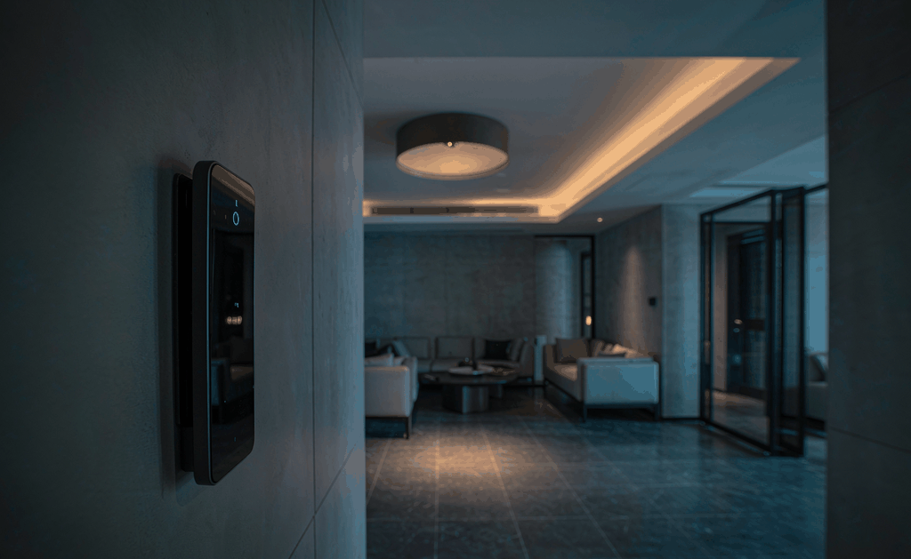
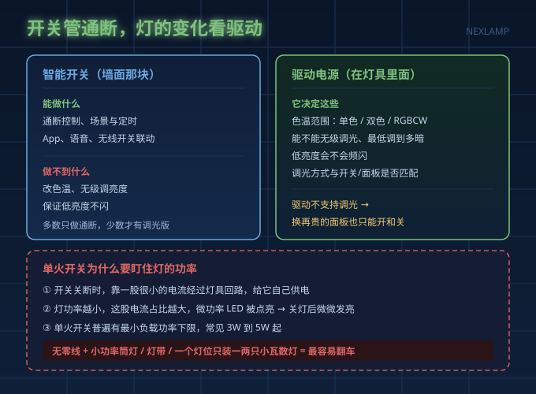
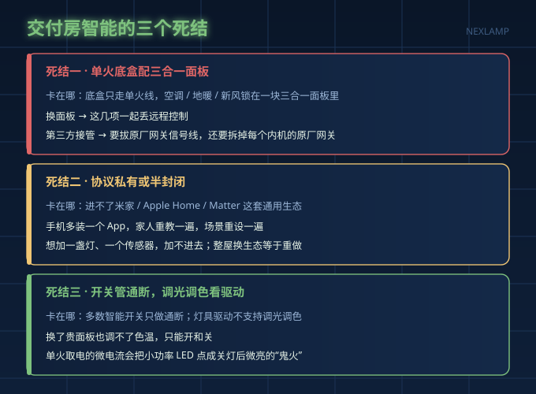
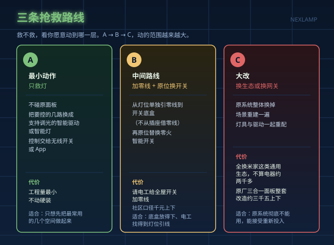

交付房自带的"全屋智能"，和你买房时想象的往往不是一回事：面板说锁就锁，接不进米家，想加一盏灯都不知道从哪下手。业主群里把这套东西叫"全屋智能变全屋智障"。
值不值得救，标准不是有没有智能面板，而是三件事：能不能接进你已经在用的生态、底盒里有没有零线、原网关会不会和新设备打架。这就是三个死结。
死结一：单火底盒配三合一面板，把开关锁死了
全屋开关常只走单火线，底盒里只有火线和灯线，没有零线。想换标准零火智能开关，就得先补一根零线，这段线能不能补，得电工到现场看。
更麻烦的是空调、地暖、新风锁在一块三合一面板里，面板一换，这几项就一起丢了远程控制，严重时连本地操作都不听话。
想让第三方方案接管，比如用 VRF 控空调，做法是拔掉原厂网关的信号线，代价是原面板从此管不了空调。更隐蔽的是：装了 VRF 或三合一之后，每个内机的原厂网关都要拆掉，不拆就会出现地暖调不动这类说不清的问题，有业主照做后确实撞上了。
死结二：协议封闭，进不了你已经在用的生态
第二个结在协议。这类系统多是厂商私有或半封闭方案，不在米家、Apple Home、Google Home 这套 Matter 生态里。后果很实际：手机多装一个 App，家人重教一遍，场景重设，加灯和传感器也加不进去。
换生态不是换个网关。整屋换成米家这类通用生态，社区里算过的账是"不算电器大概两千多"，还没把灯和电器算进去。
死结三：灯这一侧被忽略，开关管通断，调光调色看驱动
第三个结最容易被忽略。绝大多数智能开关只做通断，少数才有调光版，不改变灯的色温和亮度范围。
灯能不能调色温、能不能无级调光、低亮度会不会闪，决定权在灯具的驱动电源。驱动不支持调光，换再贵的面板也只能开和关，档位和冷暖变化它给不了。
单火开关还有一层限制：关断时它靠一股很小的电流经过灯具回路给自己供电，灯功率越小，这股电流占比越大，越容易把微功率 LED 点亮成"鬼火"，关灯后还微微发亮。所以单火开关普遍有个最小负载功率下限，常见 3W 到 5W 起。小功率 LED 筒灯、灯带、一个灯位只装一两只小瓦数灯，恰恰最容易翻车。
结论很直接：无零线加上小功率 LED，先把灯和驱动的兼容解决掉，再谈换什么面板。

三个死结对照表
| 死结 | 卡在哪 | 直接表现 |
|---|---|---|
| 死结一 | 底盒走单火，空调地暖新风锁三合一面板 | 换面板就丢功能，接不了第三方控制 |
| 死结二 | 系统协议私有或半封闭 | 进不了米家和 Matter 生态，加不了新设备 |
| 死结三 | 灯具驱动不支持调光调色 | 换个贵面板也只能开关，关灯后微亮 |

现象和原因对着看：
| 现象 | 直接原因 |
|---|---|
| 关灯后灯微亮，像鬼火 | 单火开关取电电流经过微功率 LED |
| 换了开关还是调不了色温 | 灯具驱动不支持调光调色 |
| 低亮度下灯在闪 | 调光方式与驱动不匹配 |
| 面板一换，空调地暖就没反应 | 三合一面板被替换，原厂网关被拔线 |
三条抢救路线
救不救，取决于你愿意动到哪一层。
| 路线 | 做什么 | 适合谁 | 代价和量级 |
|---|---|---|---|
| A 最小动作：只救灯 | 不碰面板，把要控的几路换成支持调光的智能驱动或智能灯，控制交给无线开关或 App | 只想先把最常用的几个空间做起来 | 工程量最小，不动硬装 |
| B 中间路线：加零线加原位换零火开关 | 灯位单独引零线到开关底盒（不从插座借零线），再原位换零火开关 | 底盒还放得下、电工能找到灯位引线 | 请电工给全屋开关加零线，社区口径千元上下 |
| C 大改：换生态或者换网关 | 原系统整体换掉，场景重建 | 原系统彻底不能用，能接受重新投入 | 全换米家不算电器约两千多；原厂三合一面板整套改造约三千五上下 |
路线 A 里，只远程控制一台空调，装"小超人"这类单机控制器约 300 元每台；7 个内机以内全控用 VRF 约 1000 元以内；三合一智能旋钮单只约 400 元，整套"奢华版"约 3500 元。都是社区口径，不是官方报价。

动手之前，先做三件事
- 拧开一个开关底盒数线。有没有零线，直接决定你走 A、B 还是 C。
- 换面板前量底盒深度。面板出墙厚度和底盒深度不匹配是常见翻车点，社区里有 30mm 深开关配 46mm 面板装不下的例子，像小米智能开关 2 面板出墙 7.99mm 这类数字只作举例。
- 抄下原厂设备的型号和网关位置再动手，拆之前留证据，避免售后扯皮。
给电工的话可以直接抄这三句：一是灯位能不能单独引一根零线；二是底盒深度够不够放新面板；三是原来的内机网关要不要一起拆。
常见问题
精装房没零线，能不能直接装"有无零线都能装"的开关？
能装，但单火取电的物理限制还在，它只承诺通断，不能调光调色，还要盯住灯具功率下限，别在无零线加小功率 LED 的组合上吃首发的亏。
换了智能开关，灯就能调色温了吗？
不能。调色温是驱动的事，开关只管通断和（少数）亮度调节。想让灯变暖变冷，得换灯具里的驱动电源。
是不是干脆全拆了换成米家、涂鸦？
先看三件事的答案。生态进不去、零线补不了、灯和驱动又不兼容，三条里两条堵死，才值得整体重做，别为了统一品牌把还能用的东西全砸掉。
先弄清三件事，再决定拆什么
先弄清三件事——生态能不能进、零线有没有、灯和驱动配不配合——再决定拆什么。别让"统一品牌"变成"重新花一遍钱"。